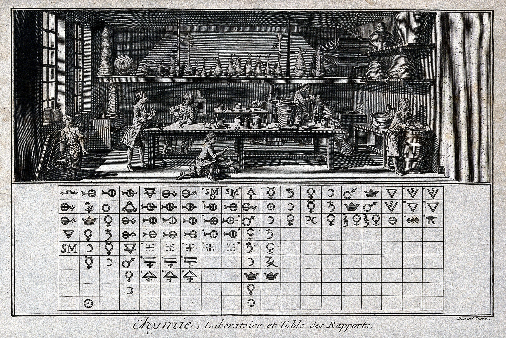

Computational Neurochemistry#
Author(s)

Fig. 1 Bénard, 1731-1794. (1762-1773). Chemistry: a chemical laboratory with many workers (above), symbols of elements arranged in a proto-periodic table (?) (below). Engraving by R. Bénard. [1 print : engraving]. Wellcome Collection. https://jstor.org/stable/community.24857469 License: PDM 1.0.#
Welcome!#
Computational Neurochemistry is a text designed for both self-learners and instructor led courses bridging molecular neuroscience, biochemistry, and computational modeling. The work integrates simulation code, reproducible figures, and open-access formats (PDF, EPUB, Markdown, TXT) distributed via GitHub Pages. It is conceived as both a pedagogical and research-support resource, aiming to formalize computational neurochemistry as an integrated field.
In October 2025 I wrote a preregistration on OSF.
Kelly, J. W. (2026). Computational Neurochemistry (Version 1.0.0). https://joshuawkelly.github.io/Computational-Neurochemistry/index.html
Kelly, Joshua W. Computational Neurochemistry. 2026, Version 1.0.0. https://joshuawkelly.github.io/Computational-Neurochemistry/index.html.
Version 1.0.0 | 2026-01-06